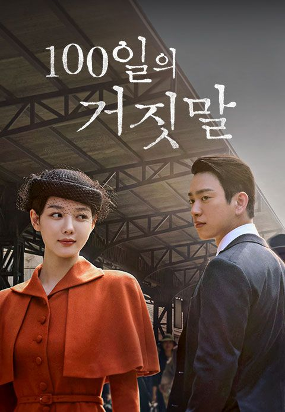

린스쿨 12기 독서 · 시
나는 얼마큼 작으냐
— 부끄러움을 쓴 시인들
시인들은 자신의 작음과 부끄러움을 어떻게 마주했을까요?
여는 시 김수영 · 1회차 윤동주
"부끄럽다"
여는 시 · 시인
김수영 (1921–1968)

헤더 제공 사진
1921
서울에서 태어남. 일제강점기에 일본 도쿄로 유학
1945
광복 뒤 시를 쓰기 시작함
1950
한국전쟁 중 끌려갔다가 포로수용소 생활 — 오늘 시에 그 기억이 나옴
1960
4·19 뒤, 자유와 양심을 정면으로 쓰는 시인이 됨
1965
「어느 날 고궁을 나오면서」
1968
마지막 시 「풀」. 같은 해 6월 사고로 숨짐
일제강점기 시인이 아니라, 광복 20년 뒤의 시입니다.
오늘은 이 시로 문을 열고 20여 년 전의 윤동주에게 거슬러 갑니다.
여는 시 · 함께 생각하기
나는 무엇에 화를 내는가
읽기 ① 찾기
시인이 화를 내는 상대는 누구인가요? 화를 내지 못하는 상대는 누구인가요? 두 줄로 나눠 적어 보세요.
읽기 ② 뜻 풀기
"조금쯤 옆으로 비켜 서 있다"는 건 어떤 모습일까요? 시인은 그 모습을 스스로 뭐라고 부르나요?
읽기 ③ 견주기
마지막 연에서 시인은 모래, 바람, 먼지, 풀에게 묻습니다. 왜 하필 이렇게 작은 것들에게 물을까요?
생각 나누기
큰 일에는 말하지 못하고 작은 일에만 화를 낸 적이 있나요?

들어가며
「100일의 거짓말」
사진 속 옷차림, 기차역, 두 사람의 표정을 보세요.
언제쯤, 어떤 시대의 이야기일까요?
생각 나누기
그 시대를 살았던 청년이라면 무엇을 숨기고, 무엇을 끝까지 지키려 했을까요?
1회차 · 시인
윤동주 (1917–1945)

1941년 연희전문 졸업 사진 · 퍼블릭 도메인 (위키미디어 공용)
1917
북간도 명동촌에서 태어남. 사촌 송몽규와 함께 자람
1938
서울 연희전문학교(지금의 연세대) 문과 입학
1939
「자화상」 — 22살
1941
「서시」 — 시집을 엮으려 했으나 내지 못함
1942
일본 유학, 도쿄에서 「쉽게 씌어진 시」
1943
독립운동 혐의로 체포
1945
2월 16일 후쿠오카 형무소에서 숨짐. 광복 여섯 달 전, 27살
1948
남은 원고로 『하늘과 바람과 별과 시』가 나옴
서시 · 함께 생각하기
나한테 주어진 길
읽기 ① 찾기
'하늘', '바람', '별'은 각각 몇 번 나오나요? 시집 제목 『하늘과 바람과 별과 시』와 견주어 보세요.
읽기 ② 뜻 풀기
나뭇잎이 살짝 흔들리는 바람에도 괴로워하는 사람은 어떤 사람일까요?
읽기 ③ 견주기
앞부분은 "괴로워했다", 뒷부분은 "걸어가야겠다"입니다. 무엇이 바뀌었나요?
생각 나누기 · 한스와 잇기
"나한테 주어진 길"과 한스가 걸은 신학교의 길은 같은 길일까요? 누가 준 길인지가 다르면 무게도 달라질까요?
자화상 · 함께 생각하기
우물 속의 사나이
읽기 ① 견주기
「서시」의 '나'는 하늘을 우러렀습니다. 「자화상」의 '나'는 어디를 들여다보나요? 거기 무엇이 있나요?
읽기 ② 찾기
'나'는 사나이를 보며 마음이 몇 번 바뀌나요? 바뀌는 낱말을 차례로 적어 보세요.
읽기 ③ 견주기
첫 연과 마지막 연은 거의 같습니다. 마지막 연에 무엇이 더해졌나요?
생각 나누기
그 사나이는 누구일까요? 나 자신이 미웠다가 가엾었던 적이 있나요?
쉽게 씌어진 시 · 함께 생각하기
최후의 나, 최초의 악수
읽기 ① 찾기
'나'는 지금 어디에 있고 무엇을 하며 지내나요? 시에서 근거를 찾아보세요.
읽기 ② 뜻 풀기
시가 '쉽게' 써지는 게 왜 부끄러울까요? 바로 앞 줄 "인생은 살기 어렵다는데"와 이어 읽어 보세요.
생각 나누기 · 한스와 잇기
한스도 아버지와 마을의 기대를 안고 먼 학교로 갔습니다. 학비 봉투를 받은 윤동주와 한스는 무엇이 같고 다를까요?
생각 나누기
「자화상」에서는 나를 미워했는데, 여기서는 나에게 손을 내밉니다. 3년 사이에 무엇이 달라졌을까요?
함께 보기 · 핵심 토론
부끄러움은 무엇을 남겼나
1941
서시
하늘 아래 부끄럼 없기를 다짐한다
1939
자화상
우물 속의 나를 미워하다 가엾어한다
1942
쉽게 씌어진 시
부끄러운 나에게 손을 내민다
1965
고궁을 나오면서
작은 일에만 화내는 나를 부끄러워한다
핵심 토론
부끄러움은 두 시인을 무너뜨렸을까요, 아니면 버티게 했을까요?
한스의 부끄러움(시험, 친구, 아버지)과 견주어 이야기해 보세요.
글쓰기 · 선택제 · 9분
오늘 밤 우물을 들여다본다면 거기 어떤 '나'가 있을까요?
그 나에게 손을 내밀며 건네는 말을 써 봅시다.
①
우물 속에 보이는 것 세 가지
②
그 '나'를 보는 마음 — 미움, 가엾음, 그리움…
③
나에게 건네는 첫 악수 한 문장
산문도, 8줄 안팎의 짧은 시도 좋습니다. 촉박하면 숙제로 이어 갑니다.